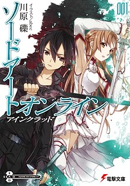
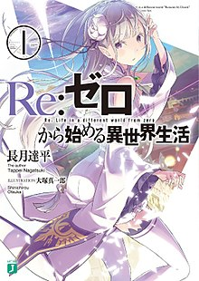
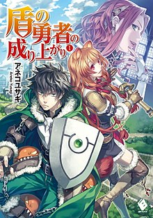
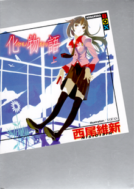
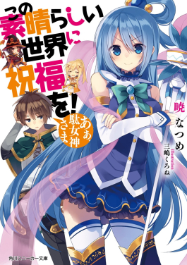
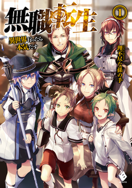

Sword Art Online: A series set in the
2020s, following Kirito and Asuna as they navigate virtual reality
MMORPG worlds and a simulated civilization.

Re:Zero − Starting Life in Another World
(Japanese: Re:ゼロから始める異世界生活), The story of Subaru
Natsuki, a transported hikikomori, in a world filled with
supernatural challenges.

The Rising of the Shield Hero (Japanese:
盾の勇者の成り上がり, Hepburn: Tate no Yūsha no Nariagari) is a dark
fantasy isekai series featuring the adventures of the Shield Hero,
Naofumi Iwatani.

Overlord (Japanese: オーバーロード,
Hepburn: Ōbārōdo) is the tale of an overpowered protagonist,
Momonga, as he reigns supreme in a virtual world turned real.

No Game No Life (Japanese:
ノーゲーム・ノーライフ, Hepburn: Nō Gēmu Nō Raifu) the adventures of
sibling gamers, Sora and Shiro, in a world governed by games and
wits.

Monogatari (Japanese: 物語, "Story") is
Koyomi Araragi's journey to help girls with supernatural issues,
delving into their emotional struggles.

KonoSuba: Kazuma Satou's comedic
adventures in a fantasy world with quirky allies and MMORPG
elements.

Mushoku Tensei: Jobless Reincarnation
(Japanese: 無職転生 〜異世界行ったら本気だす〜), The story of Rudeus
Greyrat, a man reborn in a fantasy world with a determination to
live life fully.

That Time I Got Reincarnated as a Slime
(Japanese: 転生したらスライムだった件), Satoru Mikami's
reincarnation as a slime in a fantasy world, building a nation of
monsters with allies.